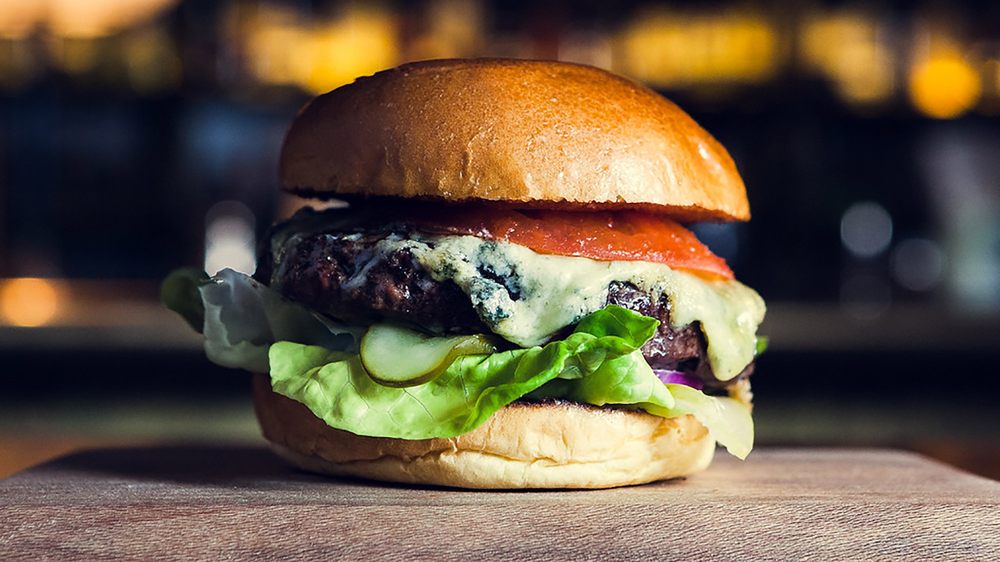

James Hamburger!

Description
This is the best burger you will find. It uses an 85/15 ratio to ensure it's juicy! Recipe makes 2 burgers.
The burger is a massive 1/2lbs and is grilled for 7 minuets on the first side and 5 minutes on the 2nd side.
Ingrdients:
- 1lbs Ground Beef
- 2 Tbs Worcestershire Sauce
- Lettuce
- Tomato
- Pickles
- Onion
- Hamburger Buns
- Mayo
- Ketchup
- Pickle Juice
- Onion Powder
- Garlic Powder
- Hot Sauce (to preference)
- Mustard
- Cheese
Steps:
Burger
- Spread ground beef on a lined baking sheet. Generously season with worcestershire sauce, salt, and pepper
- Measure out two 1/2lbs balls, and slightly compress. Don't form a patty shape, keep it looking like a ball.
- Heat grill to >450 degrees
- Grill burger for 7 minutes on the first side. Flip and grill for 5 more minutes. Add cheese with 2 minutes left
Sauce
- Combine a ratio of 3:1 mayo to ketchup
- Add relish or finely chopped pickles
- Add tablespoon of mustard
- Add tablespoon of pickle juice
- Add dash of worcestershire sauce
- Add tsp onion poweder
- Add tsp garlic powder
- Add hot sauce if desired
- thorughly mix all ingrediants together with a fork or whisk